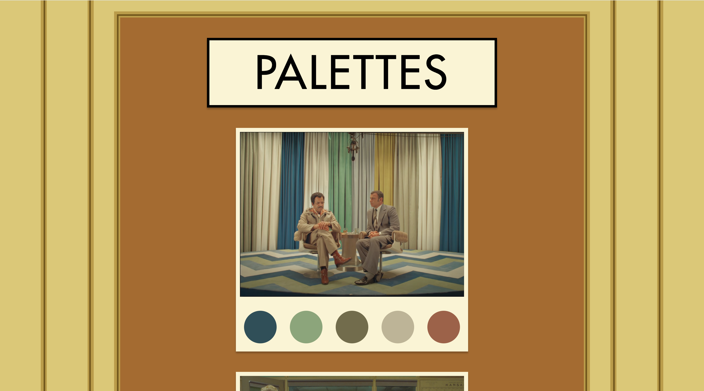

Michael Li
About
Hi, I'm Michael. I'm studying statistics
and machine learning at Carnegie Mellon University.
I'm interested in advancing our mechanistic
understanding of
how modern
deep learning
models work.
Outside of this, I enjoy hackathons, playing the piano and speedcubing.
Experience
-
Software Engineering Intern,
Google
(Summer 2025)
Worked on self-supervised graph neural networks (GNNs) for network anomaly detection.
-
Machine Learning Engineering Intern,
Epirus
(Summer 2024)
Built a real-time drone simulation environment and trained reinforcement learning agents with Proximal Policy Optimization (PPO) to engage unknown drone swarms.
-
Software Engineering Intern,
Beaver Health
(Summer 2023)
Developed a generative AI dialogue framework using GPT-4 and TypeScript to digitize evidence-based health interventions for Alzheimer's patients.
-
Researcher, University of Victoria
(2022 - 2023)
Implemented and trained Temporal Convolutional Networks (TCNs) to forecast COVID-19 cases.
-
Creator & Software Engineer,
COVIDCatcher
(2021 - 2023)
Developed a multimodal machine learning model (VGG-19, XGBoost) for COVID-19 symptom detection, deployed with React, Flask, and AWS.
-
Software Engineer,
Amador Valley
Robotics (AVBotz)
(2018 - 2022)
Implemented real-time object detection in ROS with OpenCV and C++. Automated image annotation for dataset creation using YOLOv5 and DetNet in PyTorch.
2022 Technical Report, 2021 Technical Report, 2020 Technical Report
Research
-
Michael Li, Nishant Subramani
ArXiv preprint -
Michael Li, Nishant Subramani
Workshop on the Interplay of Model Behavior and Model Internals (INTERPLAY) at COLM 2025 -
Michael Li, Fatemeh Esfahani, Li Xing, Xuekui Zhang
Journal of Global Health 13, 2023
Projects
- CLaiM (October 2024) Automatically file home insurance claims after natural disasters using computer vision. Won the Hyperbolic Prize ($1000) at CalHacks 11.0
-
Github Repo
Explorer
(June 2024)
Explore GitHub repos as folders.

- Colors of Wes Anderson (October 2023) Color palettes from Wes Anderson films. 
-
Multivac
(October 2023)
Infinite text adventure game built with Python,
React,
Flask, LangChain, and LlamaIndex. Harvard Hacks
2023.

-
The Roast
(July 2023)
Daily personalized newsletter using GPT, Claude, and
LangChain to curate daily news based on user
preferences. UC Berkeley AI Hackathon 2023.

- SEA (July 2020) Deep learning pipeline using TensorFlow and Python to identify endangered marine wildlife images.
-
Ad Lunam
(July 2020)
VR space exploration game using C# and Unity with
procedurally generated planets and asteroid fields.
Won
3rd overall at To the Moon and Hack 2020.

- Shipworthy (June 2020) Real-time ship simulator that uses computer vision with OpenCV to steer a ship in Unity via a physical steering wheel. Won 1st overall at HackItShipIt 2020.
-
Stance
(June 2020)
Developed a machine learning app using sklearn and
Flask
to detect toxic comments online, using LIME to
provide
interpretable explanations of the classifications.
Won
1st overall at Data Day Grind 2020.

Contact
limichael353@gmail.com